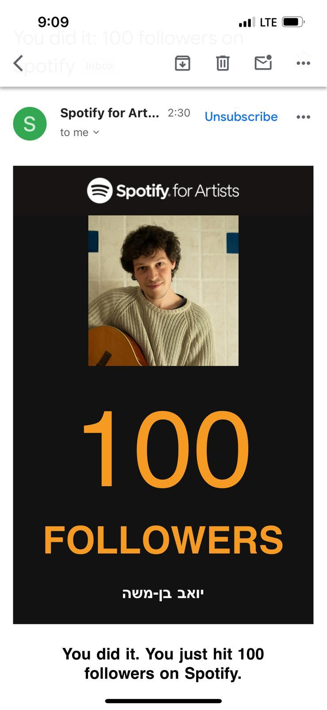

<div id="home">
<h1 class="page-title">{{ page.title }}</h1>
  
  <h1>Music</h1>
    <div class="gallery-item">
  
  <div class="gallery-info">
    <p class="gallery-date">08 Aug 2022</p>
    <p class="gallery-description">Spotify</p>
  </div>
  <ul class="posts">
    <li><span>12 Sep 2013</span> &raquo; <a href="http://www.youtube.com/watch?v=k2vJNNAQZlg">Video: Fox Business News interview</a></li>
    <li><span>02 Sep 2013</span> &raquo; <a href="http://www.wired.com/wiredenterprise/2013/09/github-for-anything/all/">Article: WIRED - GitHub Is Going Mainstream</a></li>
    <li><span>25 Jul 2013</span> &raquo; <a href="http://www.youtube.com/watch?v=7DoB0SCUtOk&list=SP055Epbe6d5aclKNAa8msO1VvDOJ8sYlS&index=23">Video: O'Reilly Media - OSCON 2013 Interview</a></li>
    <li><span>28 Dec 2012</span> &raquo; <a href="http://bits.blogs.nytimes.com/2012/12/28/github-has-big-dreams-for-open-source-software-and-more/">Article: NYTimes - Dreams of ‘Open’ Everything</a></li>
    <li><span>20 Oct 2012</span> &raquo; <a href="http://www.youtube.com/watch?v=P9jjDpWzsUI">Video: Startup School 2012 - People, Product, Philosophy</a></li>
   </ul>

</div>
